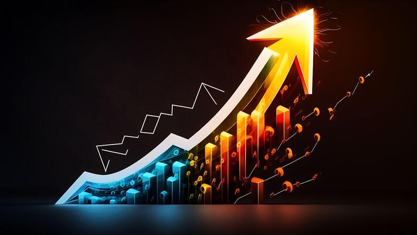

The Digital Revolution in Luxury Watchmaking
Traditional luxury watchmaking is experiencing an unprecedented transformation as digital innovation reshapes centuries-old craftsmanship practices.
Smart Integration
85%
Luxury Brands with Smart Features
Market Growth
32%
Digital Feature Adoption
Innovation Impact
45%
Revenue from Smart Watches

Technological Evolution in Luxury Watches
- 2019: Integration of advanced health sensors
- 2020: Introduction of hybrid movement systems
- 2021: Development of smart complications
- 2022: AI-powered personalization features
- 2023: Sustainable tech integration
Technology Integration Comparison
| Feature | Traditional Luxury | Smart Luxury |
|---|---|---|
| Movement System | Mechanical only | Hybrid mechanical-digital |
| Functionality | Time and complications | Smart features + traditional |
| Customization | Limited physical options | Digital + physical customization |
| Connectivity | None | Smartphone integration |
| User Experience | Traditional interface | Digital + traditional interface |
Key Technological Innovations
- Smart Movements: Integration of electronic and mechanical systems
- Connected Features: Seamless smartphone synchronization
- Health Monitoring: Advanced biometric tracking capabilities
- Digital Customization: Personalized watch faces and functions
Future Developments
The luxury watch industry continues to evolve with:
- Advanced AI integration for personalized experiences
- Sustainable technology implementations
- Enhanced connectivity features
- Improved battery technology